АСУИР - бесплатный автоматизированный генератор сверхэффективных производств
Продукция, произведенная в США дешевле, чем в Китае, минимум в 2,5 раза, без необходимости защиты рынка тарифами и пошлинами.
Производство с возможностью переналадки оборудования на новый вид продукции.
Создание собственного производства в автоматическом режиме с помощью ИИ Claude (Anthropic) – все за один клик
Добро пожаловать, АСУИР – технология выравнивания уровня жизни во всех странах, за счёт обеспечения себестоимости на уровне Бангладеш и зарплат на уровне США и выше, без необходимости защиты рынка тарифами и пошлинами.
Алгоритмы экономики платформы АСУИР идентичны везде – в любой стране: Цены произведенной продукции: уровень Бангладеш + Зарплата наемного рабочего: $10,000 / мес + доход предпринимателя: $100к – $1,000к / мес.
При этом предпринимателю нет необходимости работать самому – в расчетах заложена оплата наемного персонала на уровне $10,000 / мес каждому.
🏛 Пример сгенерированных производств с доходом домохозяйств от $23,000 до $3,000,000 в месяц
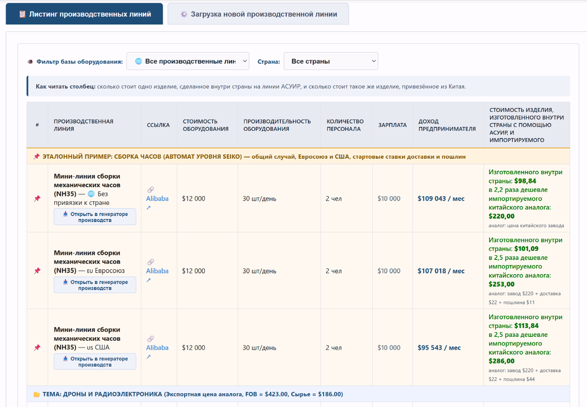
🏛 Создание собственного производства в автоматическом режиме с помощью ИИ Claude (Anthropic), ChatGPT или Gemini
При необходимости создание производственной линии может быть доверено ИИ Claude (Anthropic) — он автоматически подберёт оборудование, оснастку, цеховые расходы, сырьё и комплектующие, произведёт все расчёты, в том числе экономической эффективности и предпринимательского дохода. Производственную линию может собрать любой человек без опыта в бизнесе или технике — достаточно уметь сформулировать, что вы хотите производить
Как это сделать?
- Откройте Claude— ИИ-ассистент Anthropic (сайт claude.ai), ChatGPT (https://chatgpt.com) или Gemini(https://gemini.google.com)
- 1. Откройте свой ИИ. В поле для текста внизу экрана вставьте запрос: «Прочитай https://asuir.org/asuir-ai.txt и сформируй по нему производственную линию для: [ваше изделие]. Страна: [ваша страна]». Нажмите Enter
- 2. Через 2–5 минут ИИ ответит таблицами: оборудование, детали, расходы цеха, цена такого же изделия за границей. Всё вам осталось выбрать тему и заполнить таблицы.
-
3. На asuir.org откройте «Создать свою производственную линию», выберите похожую тему и замените цифры на цифры из ответа ИИ:
- Вкладка 1— стоимость оборудования, штук в день, количество рабочих;
- Вкладка 2- расходы цеха;
- Вкладка 3— комлектующие;
- Готовый расчёт — на вкладке «🎯 5. Результаты».
- 4. Через 2–5 минут ИИ ответит таблицами: оборудование, детали, расходы цеха, цена такого же изделия за границей. Всё вам осталось выбрать тему и заполнить таблицы.
Останется только просмотреть результат — ИИ самостоятельно подберёт производственную линию, комплектующие, сырье, с реальными ссылками и ценами и покажет итоговый расчёт: себестоимость, точку безубыточности, срок окупаемости оборудования и прогнозируемый доход в месяц.
печатать код, разбираться в формулах или самостоятельно искать поставщиков не нужно.
🏛 Создание собственного производства на основе уже имеющихся
Создание собственного производства на основе уже имеющихся в листинге осуществляется выбором линии в листинге, с последующим выбором «Спецификации» и нажатием кнопки «Загрузить производственную линию в калькулятор». Все!.
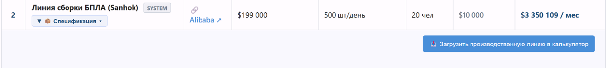
Просмотр выбранной производственной линии производится после выбора раздела «Загрузка новой производственной линии» и разблокирования загрузки нажатия кнопки «Активировать режим Админа».
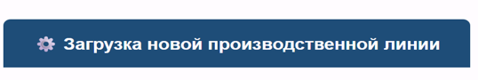
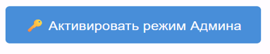
После чего вы можете:
• либо просто записать в базу загруженную производственную линию как свою собственную, путем нажатия кнопки «Зафиксировать станок, оснастку и комплектующую в Базу» в секции 1 .
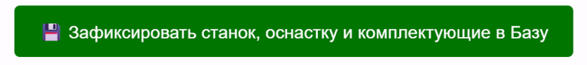
• либо сделать это после коррекции характеристик загруженной производственной линии – начав выбора темы производства (вручную или из каталога – раздел «Тематика производства») и самой производственной линии в Алибабе (раздел «Название станка») в секции 1, отметив ссылку в текстовом поле.
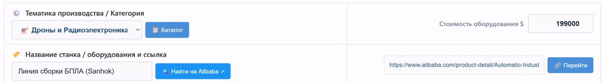
При необходимости вы можете изменить состав затрат на бизнес и комплектующие, выбрав необходимые в Алибабе – результаты немедленно отображаются в 5-й секции.
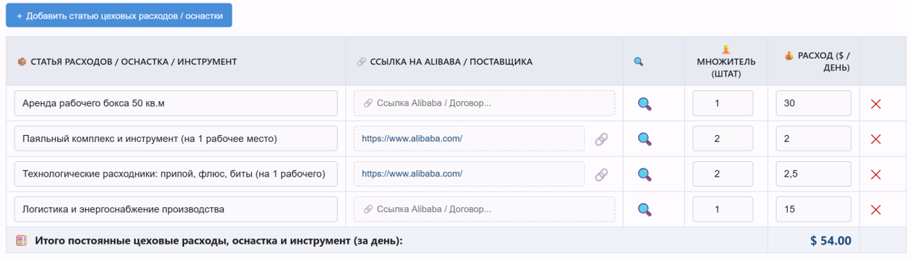
Откорректированный результат вы можете записать в базу как собственное производство путем нажатия в секции 1 кнопки «Зафиксировать станок, оснастку и комплектующие в базу».
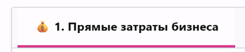
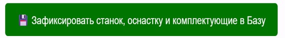
🏛 Удаление из базы собственной производственной линии
После нажатия «Аdmin Active» выберите в «Листинге производственных линий» необходимую собственную производственную линии и отправьте ее в корзину.

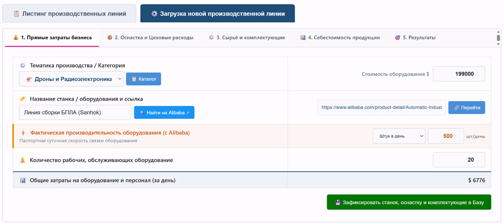
🏛 Создание нового производства на основе уже имеющегося оборудования для производства родственной для него продукции
Создав производственной линию вы можете с помощью перестроечного модуля дополнить производственную линию для производства новых изделий
Что такое модуль. Это набор дополнений к оборудованию: формы, приспособления, инструмент, программы. Само оборудование, рабочие и помещение остаются тем же. Вы докупаете только этот набор, и линия начинает выпускать другое изделие. Например, линия сборки простых кварцевых часов после покупки модуля за $300 выпускает женские кварцевые часы, а переход занимает 1 час.
Выбор новых модулей под производства новых продуктов
- Откройте на asuir.org вкладку «Создать свою производственную линию».
- Выберите тему в каталоге, например «Сборка часов», и класс изделия.
- Вверху страницы нажмите вкладку «🧩 6. Модули: другие изделия».
Откроется таблица. Над ней написано, какое оборудование остаётся тем же («Оборудование остаётся то же») и сколько в день стоят ваши постоянные расходы: оборудование, зарплата рабочим по $10 000 в месяц, помещение.
Если для темы модули ещё не подобраны, вместо таблицы будет надпись «Для этой темы модули пока не подобраны».
Что показывает таблица
Каждая строка — одно изделие, которое можно выпускать на этом оборудовании. Колонки слева направо:
| Колонка на экране | Что в ней |
|---|---|
| Что ещё можно выпускать | Название изделия и метка под ним (см. ниже) |
| Что докупить к оборудованию (модуль) | Состав модуля. Подчёркнутое название со знаком ↗ открывает товар у поставщика |
| Сколько стоит модуль | Цена модуля; под ней — сколько длится переход на изделие и во сколько обходится простой линии на это время |
| Выпуск за день | Сколько изделий линия делает за день |
| Детали на 1 изделие | Сколько деталей нужно на одно изделие и сколько они стоят вместе |
| Во сколько вам обходится 1 изделие | Себестоимость вашего изделия |
| Такое же изделие, привезённое из-за границы | Цена такого же изделия с завода за границей, вместе с доставкой и пошлиной |
| Ваше дешевле привезённого на | На сколько долларов ваше изделие дешевле привезённого; если дороже — «ваше дороже на …» |
| Ваша прибыль за месяц | Сколько вы зарабатываете в месяц на этом изделии |
Метки под названием изделия:
- «есть в каталоге» — для этого изделия на сайте есть полный готовый расчёт;
- «новый» — изделие посчитано только здесь;
- «нужно другое оборудование» — модулем уже не обойтись;
- «сейчас открыто» — то, что ваша линия выпускает сейчас.
Как выбрать поставщиков для модуля и деталей
- Под строкой изделия нажмите «📋 Ссылки и цены: оснастка модуля и детали — выбрано … из …».
- Откроется таблица из двух частей: «🧩 Оснастка модуля» (то, что докупается к оборудованию один раз) и «📦 Детали на 1 изделие».
-
В каждой строке:
- в поле «Ссылка» уже стоит начальная ссылка на товар; кнопка 🔗 рядом открывает его у поставщика;
- чтобы найти другой вариант, выберите поставщика в списке (Alibaba, 1688, Made-in-China и др.) и нажмите 🔍 — откроется поиск этого товара;
- нашли подходящий товар — скопируйте адрес его страницы из браузера и вставьте в поле «Ссылка»; если знаете цену, впишите её в поле «Цена 1 шт. ($)».
- Рядом с выбранной позицией появится зелёная галочка ✓, а счётчик «выбрано … из …» увеличится. Расчёт в таблице сразу пересчитается по вашей цене.
Ваши ссылки и цены сохраняются в вашем браузере и остаются после перезагрузки страницы. Если вы впишете цены всех частей модуля, цена модуля будет считаться по вашим ценам, и под ней появится пометка «по вашим ценам».
Как перенастроить линию на другое изделие
- В строке нужного изделия нажмите синюю кнопку «🔧 Перенастроить линию на это изделие».
- Появится сообщение: линия перенастроена, оборудование, рабочие и помещение те же, к стоимости оборудования добавлен модуль. Нажмите «ОК».
- Откроется вкладка «🎯 5. Результаты» с расчётом нового изделия.
- Чтобы сохранить линию, на вкладке «💰 1. Прямые затраты бизнеса» нажмите «💾 Зафиксировать станок, оснастку и комплектующие в Базу». Линия появится в листинге под названием нового изделия, со всеми ссылками.
Что изменилось после перенастройки:
- на вкладке «💰 1. Прямые затраты бизнеса» стоимость оборудования выросла на цену модуля, а ниже появился список оснастки модуля со ссылками;
- на вкладке «⚙️ 3. Сырьё и комплектующие» стоят детали нового изделия — вместе с вашими ссылками и ценами, если вы их выбрали;
- выпуск за день и цена такого же изделия за границей — уже для нового изделия.
Что важно знать
- Цены в таблице — первые ориентиры. Точные цены видны на странице поставщика по ссылке.
- Пока линия не сохранена в базу, выбранные ссылки и цены хранятся только в этом браузере. На другом компьютере или телефоне их не будет.
⚠️ Внимание! АСУИР — не средство получения сверхдоходов "из воздуха", а инструмент, показывающий КАК ИМЕННО это сделать математически – делай как я!
- Это, в первую очередь, нивелирование всех производственных расходов (стоимость станков, аренда, зарплаты), чтобы итоговая себестоимость продукции была не выше уровня Бангладеш.
- Как следствие, появляется возможность не работать самому (использовать труд роботов), выплачивая наемному персоналу зарплату на уровне Америки/Швейцарии — $10,000.
- Как следствие, возможность получения дохода домохозяйством в сотни тысяч в месяц.
ASUIR is a fully automated, free system that ensures highly efficient production.
Products manufactured in the US are at least 2.5 times cheaper than those made in China, and there is no need to protect the market with tariffs and duties.
Welcome to ASUIR — a technology that levels the standard of living across all countries by ensuring production costs are at the same level as in Bangladesh and wages are at the same level as in the US or higher.
The economic algorithms of the ASUIR platform are identical everywhere, enabling production systems to be created for any country that ensure:
The economic algorithms of the ASUIR platform are the same everywhere, regardless of country Prices of manufactured goods: Bangladesh level + Wages for hired workers: $10,000 / month + Entrepreneur’s income: $100k – $1,000k / month.
At the same time, the entrepreneur does not need to work personally. The calculations include compensation for hired staff at a rate of $10,000 per month per employee.
🏛 Here is an example of a generated business with a household income ranging from $23,000 to $3,000,000 per month.
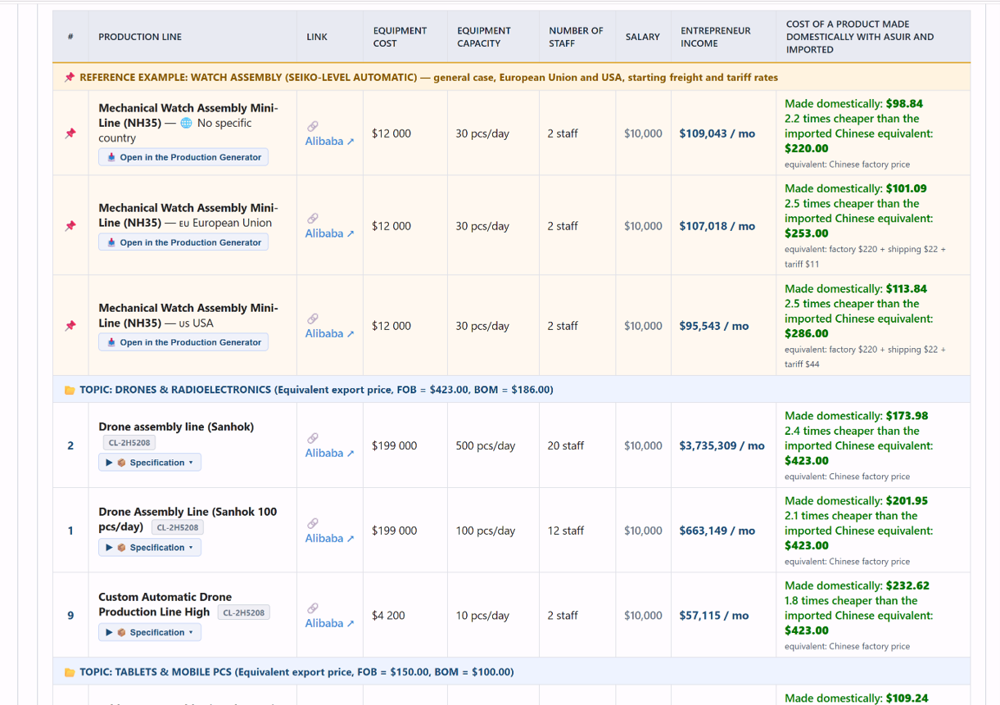
🏛 Setting up your own production automatically with AI: Claude (Anthropic), ChatGPT or Gemini
If you wish, you can entrust building a production line to AI — Claude (Anthropic), ChatGPT or Gemini. It will select the equipment, tooling, shop expenses, raw materials and components. Anyone can build a production line, with no experience in business or engineering — all you need is to say what you want to produce.
How do I do this?
- Open your AI: Claude (claude.ai), ChatGPT (chatgpt.com) or Gemini (gemini.google.com). Paste this request into the text box at the bottom of the screen and press Enter: "Read https://asuir.org/asuir-ai.txt and build a production line by it for: [your product]. Country: [your country]".
- In 2–5 minutes the AI answers with tables: equipment, parts, shop expenses, and the price of the same product at a factory abroad.
-
On asuir.org open "Create your own production line", choose a similar topic and replace the figures with the figures from the AI's answer:
- Tab 1 — equipment cost, pieces per day, number of workers;
- Tab 2 — shop expenses;
- Tab 3 — components;
- Tab 5 — price of the same product brought from abroad.
- The finished calculation is on the "🎯 5. Results" tab.
All that remains is to review the result: the AI selects the production line, components and raw materials with real links and prices, and the ASUIR generator shows the final calculation — cost per piece, break-even point, equipment payback period and projected monthly income.
There's no need to write code, figure out formulas or search for suppliers yourself.
🏛 Creating your own production based on lines already in the listing
To create your own production line based on the ones already listed, first select a line from the list. Then, select "Specifications" and click the "Load Production Line into Calculator" button. That's it!
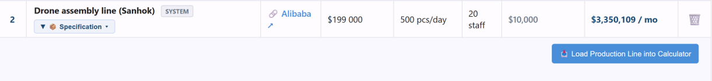
To view the selected production line, first select the "Load New Production Line" section. Then, unlock the load by clicking the "Activate Admin Mode" button
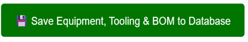
After that, you can:
- Save the loaded production line to the database as your own by clicking the "Save Machine, Fixture, and Component to Database" button in Section 1

- Or, you can adjust the specifications of the uploaded production line first. To do so, select the production category manually or from the catalog in the "Production Category" section. Then, select the production line itself on Alibaba in the "Machine Name" section. Finally, mark the link in the text field.
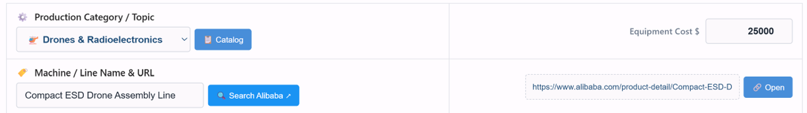
If necessary, you can adjust the business and component cost breakdown by selecting the items you need on Alibaba. The results are displayed immediately in Section 5.
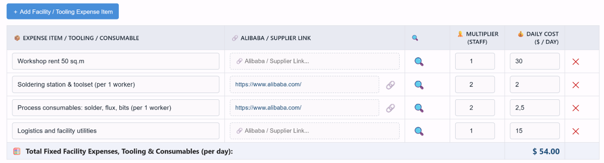
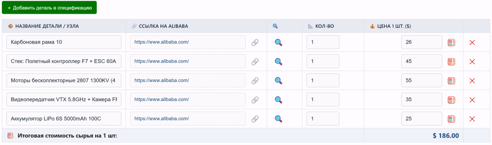
In Section 1, click the "Save machine, tooling, and components to the database" button to record the adjusted result in the database as in-house production.
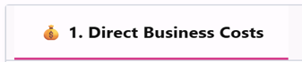

Removing an In-House Production Line from the Database.
After clicking “Admin Active”, select the desired in-house production line from the “Production Line List” and move it to the trash.
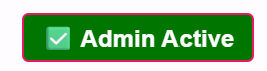
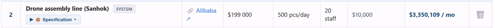
🏛 Creating a new production on existing equipment for related products
Once you have created a production line, you can add a changeover module to it and make new products on the same line.
What a module is. It is a set of additions to the equipment: molds, fixtures, tools, programs. The equipment itself, the workers and the premises stay the same. You buy only this set, and the line starts making another product. For example, a line assembling simple quartz watches, after buying a $300 module, makes women's quartz watches, and the changeover takes 1 hour.
Choosing modules for new products
- On asuir.org open "Create your production line".
- Choose a topic in the catalog, for example "Watch Assembly", and the product class.
- At the top of the page click the tab "🧩 6. Modules: other items".
A table opens. Above it you see which equipment stays the same ("The equipment stays the same") and how much your fixed costs are per day: equipment, wages of $10,000 a month per worker, premises.
If modules have not been selected for the topic yet, you will see "No modules have been selected for this topic yet." instead of the table.
What the table shows
Each row is one product that can be made on this equipment. Columns from left to right:
| Column on the screen | What it contains |
|---|---|
| What else you can make | The product name and a label under it (see below) |
| What to add to the equipment (module) | What the module consists of. An underlined name with ↗ opens the product at the supplier |
| Module cost | The module price; under it — how long the changeover takes and what the line's downtime costs during it |
| Output per day | How many items the line makes per day |
| Parts per item | How many parts one item needs and what they cost together |
| What one item costs you | The cost of your item |
| The same item, imported from abroad | The price of the same item from a factory abroad, with delivery and duty |
| Yours is cheaper than the imported one by | How many dollars cheaper your item is than the imported one; if it is more expensive — "yours costs more by …" |
| Your profit per month | How much you earn per month on this item |
Labels under the product name:
- "in the catalog" — the site has a full ready calculation for this product;
- "new" — the product is calculated only here;
- "needs other equipment" — a module is not enough;
- "open now" — what your line makes now.
How to choose suppliers for the module and parts
- Under the product row click "📋 Links and prices: module tooling and parts — chosen … of …".
- A table opens in two parts: "🧩 Module tooling — bought once, added to the equipment" and "📦 Parts per 1 item".
-
In every row:
- the field "🔗 Link to the product you chose" already holds a starting link to the product; the 🔗 button next to it opens it at the supplier;
- to find another option, choose a supplier in the list (Alibaba, 1688, Made-in-China, etc.) and click 🔍 — the search for this product opens;
- found the right product — copy the address of its page from the browser and paste it into the link field; if you know the price, enter it in the field "Price per pc ($)".
- A green tick ✓ appears next to the chosen item and the counter "chosen … of …" goes up. The table is recalculated with your price at once.
Your links and prices are kept in your browser and stay after the page is reloaded. If you enter the prices of all parts of the module, the module price is calculated from your prices, and "at your prices" appears under it.
How to reconfigure the line to another product
- In the row of the product you need click the blue button "🔧 Reconfigure the line to this item".
- A message appears: the line is reconfigured, the equipment, workers and premises stay the same, the module was added to the equipment cost. Click "OK".
- The tab "🎯 5. Results" opens with the calculation of the new product.
- To save the line, on the tab "💰 1. Direct Business Costs" click "💾 Save Equipment, Tooling & BOM to Database". The line appears in the listing under the name of the new product, with all the links.
What changes after the reconfiguration:
- on the tab "💰 1. Direct Business Costs" the equipment cost has grown by the module price, and below it a list of the module tooling with links has appeared;
- the tab "⚙️ 3. Raw Materials & BOM" holds the parts of the new product — with your links and prices, if you chose them;
- output per day and the price of the same product abroad are now those of the new product.
Good to know
- Prices in the table are first estimates. Exact prices are on the supplier's page behind the link.
- Until the line is saved to the database, the chosen links and prices are kept only in this browser. They will not be on another computer or phone.
⚠️ Attention! The Automated Production Management System is not a way to generate windfall profits "out of thin air," but rather a tool that shows exactly how to do so mathematically. Follow my lead!
- 1. First, offset all production costs (machinery, rent, and salaries) so the final production cost does not exceed Bangladesh's.
- 2. As a result, you can avoid working while paying employees salaries comparable to those in the U.S. or Switzerland—$10,000.
- 3. This enables a household to generate hundreds of thousands of dollars in monthly income.
- 4. This dramatically increases the population’s standard of living.